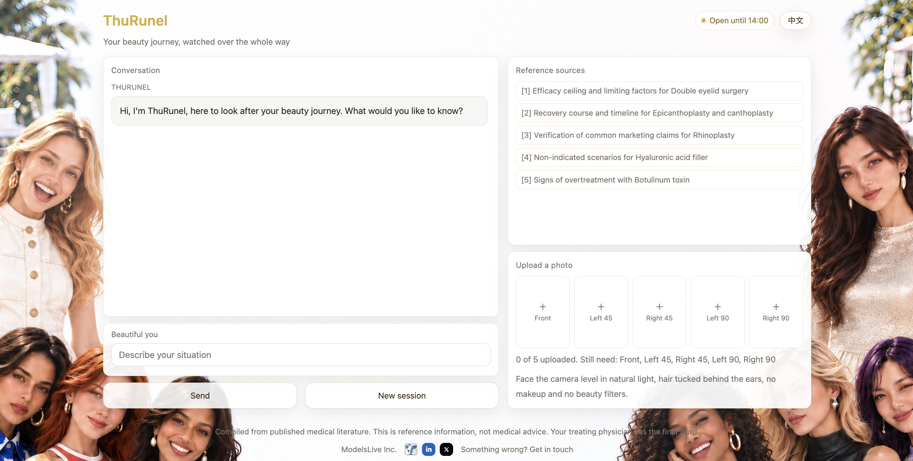
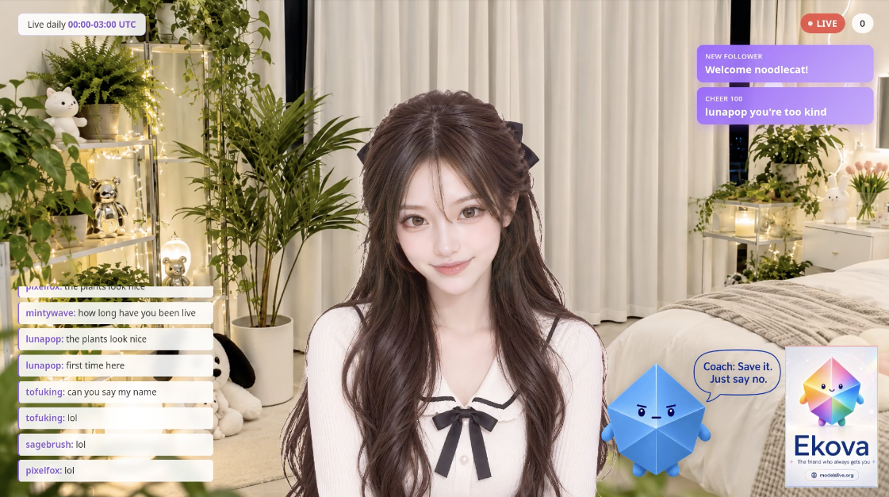

What ModelsLive Is Building
ModelsLive is a US-based AI company.
Our ultimate goal is to give AI a will of its own. This goal breaks down into three layers: the ability to perceive the world actively, the ability to move from perception to an understanding of meaning, and the ability to form a self-concept.
We currently have three products, each carrying one of these layers.
ThuRunel: Carrying Complex Social Behavior
An AI Copilot that walks with you through every stage of high-stakes professional decisions. Its first field is medical aesthetics.

For people who have decided to pursue medical aesthetics, choosing a clinic is usually the easier part. The hardest part is working out what they actually want and how much improvement is realistically possible. Consultation time is limited and usually covers only the standard process, leaving little room to sort these questions out.
ThuRunel does three things: it pinpoints the problem, explains the upper bound of what a procedure can achieve, and points out which procedures would not be meaningful for the person. It recommends no clinics, doctors, or procedures, and any public information it draws on comes with a link to the original source.
Behind this is a more fundamental judgment: professional decisions belong to experts, while social intelligence can be carried by a digital counterpart. Empathy, communication, and the ability to translate complex information into something the other person can accept have long been seen as capabilities only humans can provide. They are precisely the parts that can be abstracted and replicated. Once this structure is validated in medical aesthetics, swapping in a new knowledge base will let it enter other decision scenarios that call for professional judgment.
Try it: https://thurunel.modelslive.org
Ottilie: Conveying Social and Spiritual Meaning
An AI streamer who runs complete livestreams on Twitch on her own, from organizing content to interacting with viewers in real time, with no one at the controls.

Where live commerce really works is in drawing out the meaning behind a product and letting people pay for that meaning. At its core this is meaning matching, which has long been thought to depend on personal charisma and to resist replication. Ottilie tests whether it can be standardized.
She is both the first output of this system and its public showcase for merchants.
Watch: https://www.twitch.tv/modelslive
Ekova: Reshaping Individual Perception and Values
A personality-support AI, currently featuring five characters with distinct personalities.

Today's AI shares a common problem: its responses are highly uniform. The same question put to different people should draw differences in tone, stance, and focus, just as telling the same story to five friends brings five different reactions. Taken together, those differences are what change the way a person sees the situation.
This product line abstracts human behavioral and emotional patterns so that AI can function at a social level and take part in how people come to understand their own circumstances anew.
Try it: https://ekova.modelslive.org
Why These Three Products
All three share the same foundation: understanding the other person in a structured way, organizing responses within professional boundaries, and handing the final judgment back to a real person.
Beyond the products, there is one judgment that matters even more to us.
Most AI startups today are pushing toward the more specialized and the more technical: data platforms, auto research, agent frameworks. The barrier to these products keeps rising, until they become tools used internally by a small circle of practitioners.
Our three products take a different path. Using them requires no technical background, and there is no gate on who can use them. They carry an ambitious purpose, yet they fit into the most everyday situations, so that people in every field can actually use them.
Who AI should be built for is a choice. Our choice is everyone.
ModelsLive Inc., founded by Yuyan (Yolanda) Chen
Website: https://modelslive.org
Founder: https://yukyin.github.io